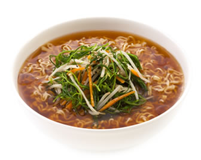

らーめん処「とりあえず」って？
当店では、スープ・麺・トッピングのすべてをお選びいただき、オリジナルのラーメンをご注文いただけます！
「毎日通っても飽きない美味いラーメン」を25年以上作り続けております。
最高級の小麦粉を使用した独自製法の麺やスープ。そして、味噌や醤油などの調味料は全て自社ブランド。
いずれも化学調味料や、添加物を極力使わないこだわりの製法で作っておりますので、
グルメな方でも満足して頂けると思います。
おすすめコーディネイト
野菜しょうゆラーメン
シャキシャキ野菜のしょうゆ味！
「中華そば」・「正油ラーメン」
と表現される場合もある。
縄文時代から先祖代々受け継がれた味
はしを使わずに手で行くのがトレンド
聖徳太子や織田信長も食したと
当時の俳句や和歌にも登場したとされている

牛バラみそラーメン
野菜の甘みと牛の旨みが
しっかり、ゆっくり、こっそり広がるみそラーメン！
みそラーメンを心から愛した野口英世の友人が
トンカツをトッピングし味噌カツが生まれ、
めんをうどんにして味噌煮込みが生まれ、
煮込んだ野菜に残ったスープをかけ味噌おでんが生まれた
と言われている。
具だくさん塩らーめん
ウィンナーの旨みと野菜の旨みがスープに
広がるあったか塩らーめん♪
1塩辛～44塩辛まで調節可能
30塩辛を超えるとスープより塩の量が多くなるので、
常連の間では「白い砂漠」と呼ばれている。
白い砂漠の向こう側を見た者はまだ誰もいない。。。
画像は1塩辛いです。
白菜豚肉とんこつらーめん
ボソボソした白菜とパサパサした豚肉の
旨みが広がる何か物足りないとんこつスープ！
卓上の調味料でお客さんの好みの味にできるのが好評
料理経験ゼロの本場九州の職人が
なんやかんやで1時間以上かけて作るため、
1日限定5食の数量限定
焼き野菜の絶妙カレーラーメン
チーズと野菜がプラスされて、クセになる美味しさです。
「まさかのまさか」のギャグでおなじみ
ケンブリッジ村山田さんや
シュノーケリング世界チャンピオンの
姫路園さんも絶賛
めんはタコ糸に変更することもできます